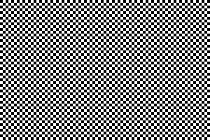
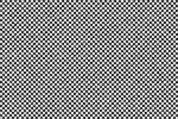
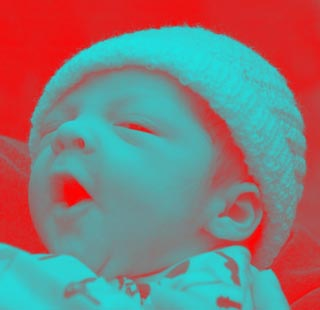
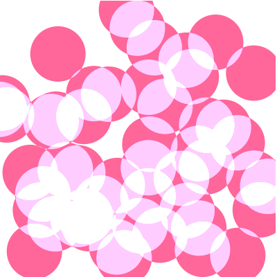
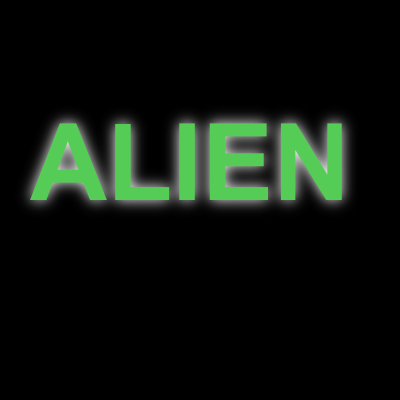

Буферы пикселей и другие эффекты
Всё, что мы делали до сих пор, использовало изображения или фигуры. Это достаточно высокий уровень. Тем не менее, холст также даёт вам прямой доступ к пикселям, если вам это требуется. Вы можете получить пиксели со всего холста или его части, манипулировать этими пикселями, а затем вернуть их обратно. Это позволяет делать всевозможные интересные эффекты.
Генерация текстур
Предположим, что мы хотели бы создать шахматную текстуру размером 300х200 пикселей.
// создаём новый буфер 300x200 пикселей
var data = c.createImageData(300,200);
// обходим в цикле каждый пиксель
for(var x=0; x<data.width; x++) {
for(var y=0; y<data.height; y++) {
var val = 0;
var horz = (Math.floor(x/4) % 2 == 0); // цикл каждые 4 пикселя
var vert = (Math.floor(y/4) % 2 == 0); // цикл каждые 4 пикселя
if( (horz && !vert) || (!horz && vert)) {
val = 255;
} else {
val = 0;
}
var index = (y*data.width+x)*4; // вычисляем индекс
data.data[index] = val; // красный
data.data[index+1] = val; // зелёный
data.data[index+2] = val; // синий
data.data[index+3] = 255; // явно задаём альфу как 255
}
}
// устанавливаем данные обратно
c.putImageData(data,0,0);Довольно просто. Мы создаём новый буфер, проходим в цикле по пикселям, чтобы задать цвет в зависимости от координат х и у, затем устанавливаем буфер на холст. Заметьте теперь, что хотя мы работаем с двухмерной графикой, буфер является простым одномерным массивом. Мы должны вычислять координаты пикселей на основе их индекса.
Данные холста — это просто очень длинный одномерный массив с целочисленным значением для каждого компонента пикселя. Пиксели красной, зелёной, синей и альфа компоненты идут по порядку, так что для расчёта индекса красной компоненты конкретного пикселя вы должны считать по следующей формуле: (y * width + x) * 4. Для пикселя 8,10 в растровом изображении шириной 20 пикселей будет (10 * 20 + 8) * 4. Умножение на 4 требуется потому, что каждый пиксель содержит четыре цветовых компоненты (RGB и прозрачность или компонент «альфа»). Объект данных содержит ширину изображения, так что вы можете записать в виде (10 * data.width + 8) * 4. После того, как вы нашли красную компоненту, вы можете найти другие, увеличивая индекс, как показано в приведённом выше коде для зеленых, синих и альфа компонент.
Вот результат кода выше.

Добавление шума
Теперь модифицируем, чтобы это выглядело чуть грубее. Добавим немного случайного шума, который делается из пикселей несколько иного цвета.
Вот. Немного запачкано.

Инверсия фото
Вот так образуются новые изображения через буферы пикселей. Мы также можем манипулировать существующими данными Canvas. Это означает, что на холсте может быть почти любой вид фильтра Фотошопа. Предположим к примеру что вы хотите инвертировать изображение, это простое уравнение. Каждый пиксель состоит из набора значений RGBA, каждый от 0 до 255. Для инверсии мы просто отнимем из 255 значение каждого компонента. Вот как это выглядит:
var img = new Image();
img.onload = function() {
// рисуем изображение на холсте
c.drawImage(img,0,0);
// получаем данные холста
var data = c.getImageData(0,0,canvas.width,canvas.height);
// инвертируем каждый пиксель
for(n=0; n<data.width*data.height; n++) {
var index = n*4;
data.data[index] = 255-data.data[index];
data.data[index+1] = 255-data.data[index+1];
data.data[index+2] = 255-data.data[index+2];
// не трогайте альфу
}
// возвращаем данные обратно
c.putImageData(data,0,0);
}
img.src = "baby_original.png";Заметьте, что мы изменяем только компоненты RGB. Альфу мы оставляем в покое, поскольку хотим только изменить цвет. Вот как это выглядит.

Чёрно-белая фотография
Вот ещё один пример. По сути, это тот же самый код, просто другое уравнение. Оно превратит цветное изображение в чёрно-белое.
for(n=0; n<data.width*data.height; n++) {
var index = n*4;
var r = data.data[index];
var g = data.data[index+1];
var b = data.data[index+2];
var v = r*0.21+g*0.71+b*0.07; // средневзвешенное
data.data[index] = v;
data.data[index+1] = v;
data.data[index+2] = v;
// не трогайте альфу
}Обратите внимание, что мы не выбираем значение серого простым усреднением цвета. Оказывается, наши глаза более чувствительны к определённым цветам, чем к другим, так что уравнение учитывает это добавляя больше зелёной компоненты. Вот конечный результат.

С буфером пикселей вы можете гораздо лучше рисовать или манипулировать графикой, как вам нравится, единственным ограничением выступает скорость. К сожалению, манипуляция с двоичными данными не является сильной стороной JavaScript, но браузеры становятся всё быстрее и быстрее, так что некоторые манипуляции с изображениями в стиле Фотошоп возможны уже сегодня. Позже в разделе про инструменты я покажу вам некоторые библиотеки, которые делают такие вещи проще и быстрее.
Режимы наложения
Холст также поддерживает режимы наложения, которые в некотором роде похожи на режимы наложения в Фотошопе. Каждый раз, когда вы рисуете фигуру каждый пиксель сравнивается с имеющимся пикселем, затем вычисляется конечный пиксель, основанный на некотором уравнении. Обычно мы используем SrcOver, то есть исходный пиксель (тот, который вы рисуете) будет рисоваться поверх конечного пикселя. Если ваш исходный пиксель частично прозрачный, то два пикселя смешаются пропорционально прозрачности. SrcOver является лишь одним из многих режимов наложения, однако. Вот пример использования режима lighter при рисовании пересекающихся кругов. lighter складывает два пикселя вместе с максимальным значением белого цвета.
c.globalCompositeOperation = "lighter"; // устанавливаем режим наложения
c.fillStyle = "#ff6699"; // заливаем розовым
// рисуем 50 случайных кругов
for(var i=0; i<50; i++) {
c.beginPath();
c.arc(
Math.random()*400, // случайный x
Math.random()*400, // случайный y
40, // радиус
0,Math.PI*2); // полный круг
c.closePath();
c.fill();
}
Эффект тени
Canvas также поддерживает тени похожие на CSS. Вы можете установить цвет, смещение и радиус размытия тени для имитации разных эффектов. В данном примере создаётся белое свечение позади некоторого зелёного текста.
c.fillStyle = "black";
c.fillRect(0,0,canvas.width,canvas.height);
c.shadowColor = "white";
c.shadowOffsetX = 0;
c.shadowOffsetY = 0;
c.shadowBlur = 30;
c.font = 'bold 80pt Arial';
c.fillStyle = "#55cc55";
c.fillText("ALIEN",30,200);d 

Все материалы сайта доступны по лицензии Creative Commons «Attribution-NonCommercial» («Атрибуция — Некоммерческое использование») 4.0 Всемирная, если не указано иное.